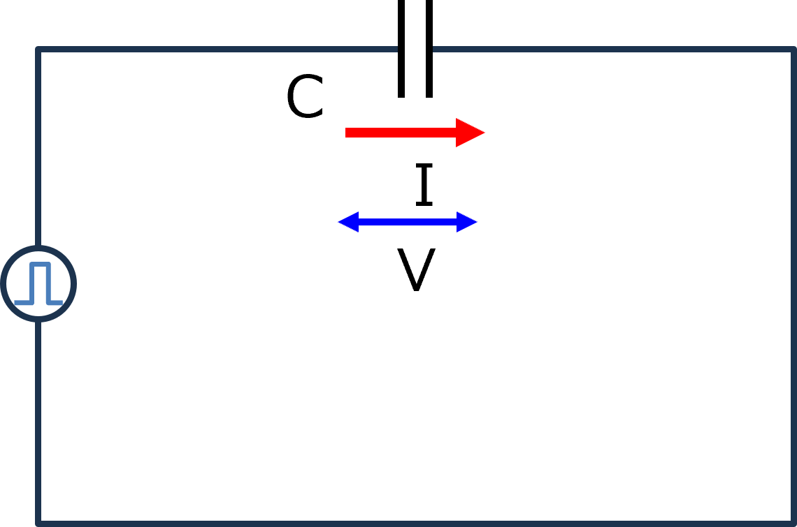
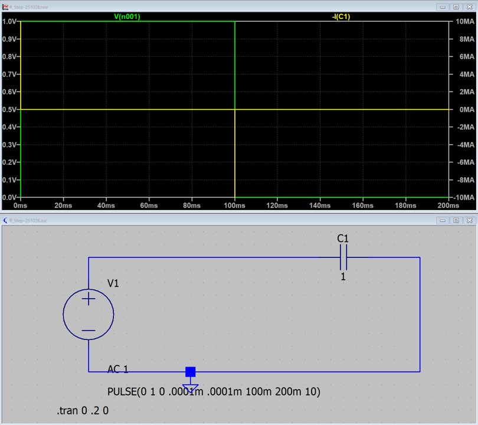
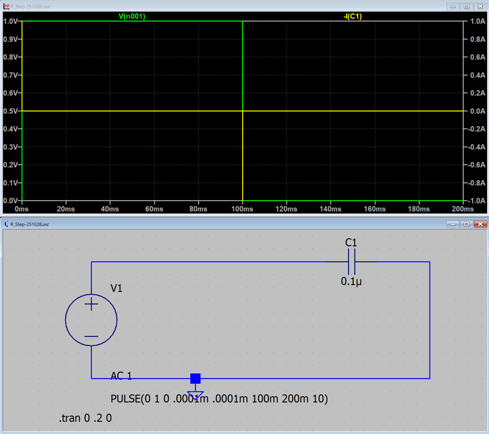
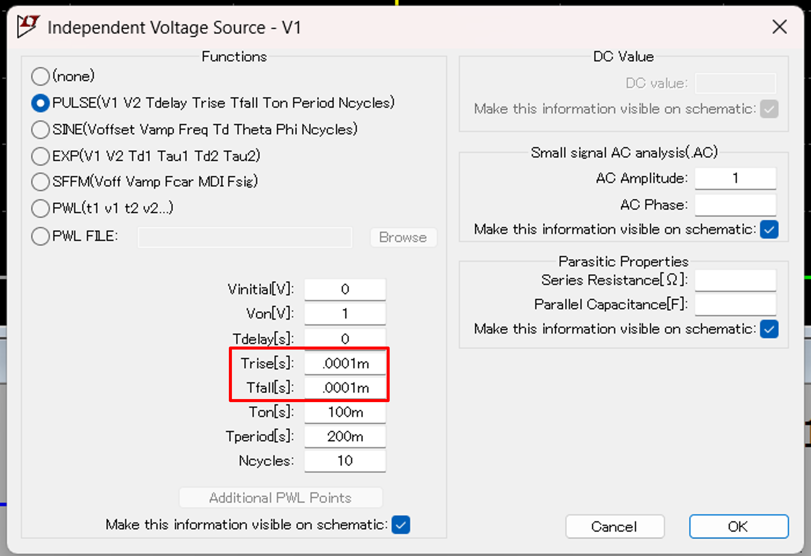
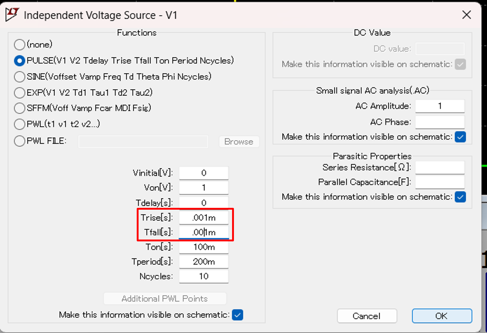
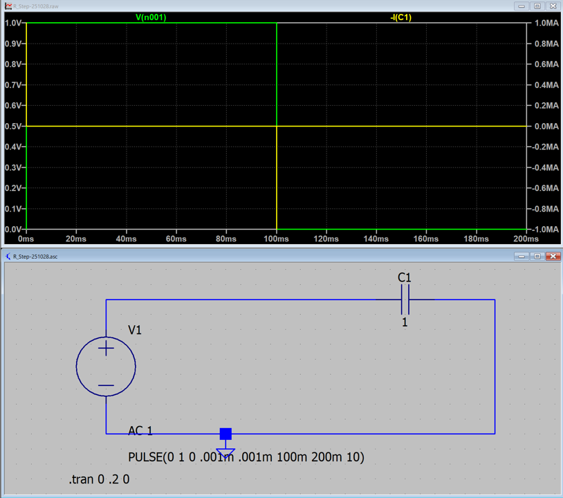

１３－２．ステップ関数（C回路）
このページからは，入力が正弦波ではなくステップ関数の場合の応答を調べていきます．
次は，コンデンサのみの回路について

入力はステップ関数となるので，
\(\Large V(t) \ : \ V_0 \ (t \geq 0) \)
\(\Large \hspace{35 pt} : \ 0 \ (t < 0) \)
となります．したがって，
\(\Large V(t) = V_0 \cdot u(t) \)
と書けます．u(t)はステップ関数です．
ステップ関数を微分すると，デルタ関数，となるので，
\(\Large \displaystyle \frac{d}{dt}V(t) = V_0 \cdot \delta(t) \)
なります．コンデンサの性質から，
\(\Large I(t) = C \ \frac{d}{dt} \cdot V(t) = C \cdot V_0 \cdot \delta(t) \)
δ関数となるので，一瞬ではあるが無限大の電流が流れることになります．
しかし，実際には配線などの抵抗があるので，C回路自体は現実的ではありません．
実際には，RC回路として考えるべきです．
とりあえず，実際にCステップ回路を作ってみてシミュレートしてみました．
C = 1 F → 10 MA

なんと，デルタ関数のピークの値が，10 MA．という値に．コンデンサの容量を変えてみると，
C = 1 µF → 10 A
C = 0.1 µF → 1 A

計算では，
条件は，
V0 = 1 V
ということで，
C = 1 F : \(\Large I(t) = C \cdot V_0 = 1 A \longleftrightarrow 10 \ MA\)
C = 1 µF : \(\Large I(t) = C \cdot V_0 = 1 \mu A \longleftrightarrow 10 \ A\)
C = 0.1 µF : \(\Large I(t) = C \cdot V_0 = 0.1 \mu A \longleftrightarrow 1 \ A\)
と，107，の差が開いています．これを考えるに，シミュレーションの設定で，

にあるようにステップの上がり，下がり時間を10-7，秒で設定したことではないかと思います．
試しに，これを10-6，秒に変えて，1F，でシミュレートすると，


10 MA → 1 MA，と変化していることがわかります．
たぶん，ステップ関数の場合は，縦軸は，
A/s
であって，デルタ関数の場合は面積で考えているのでしょう．．．．
C回路はあまり現実的ではないので，大した問題ではないのかもしれません．．．．．
次は，L回路のステップ応答です．